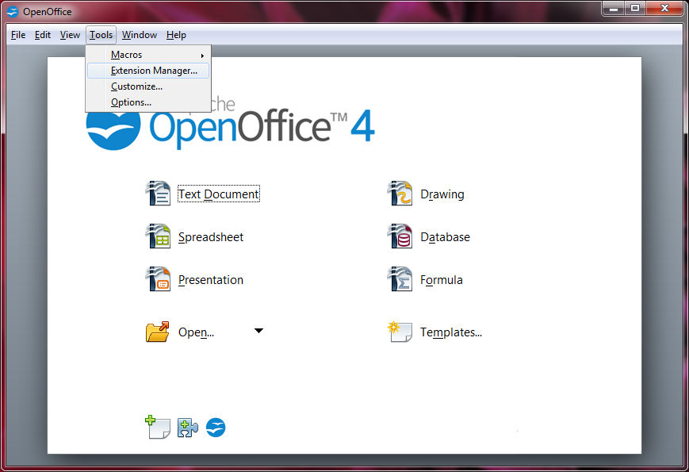
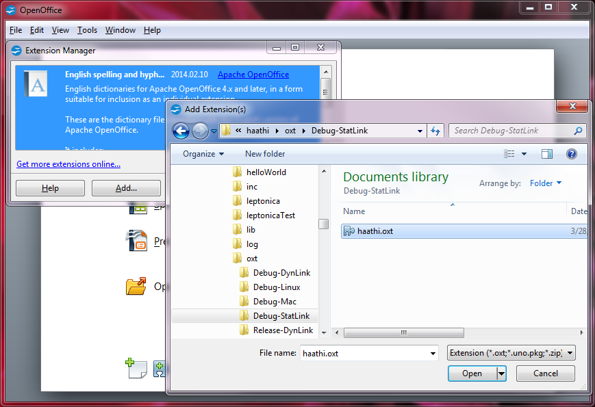
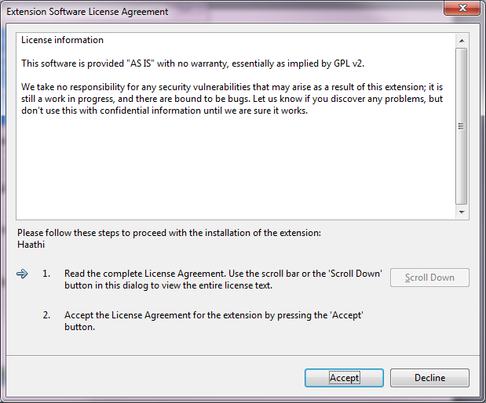
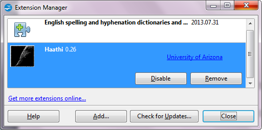
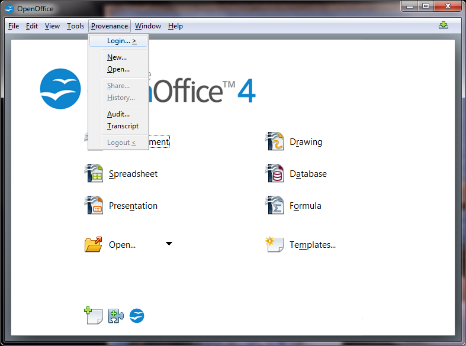
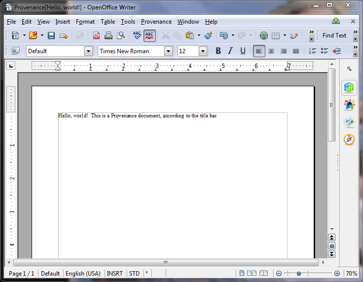
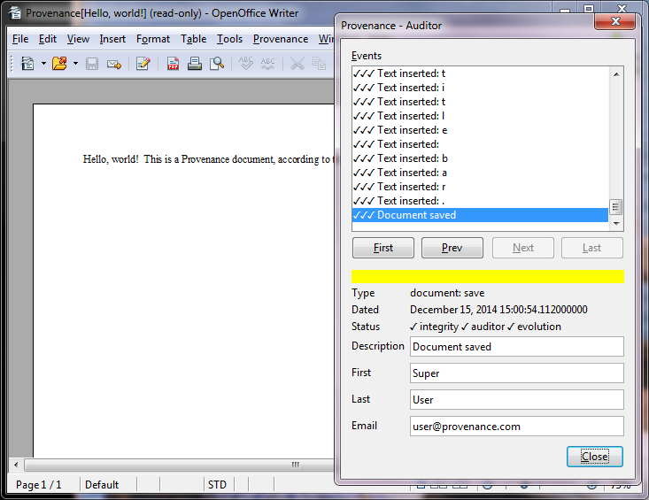
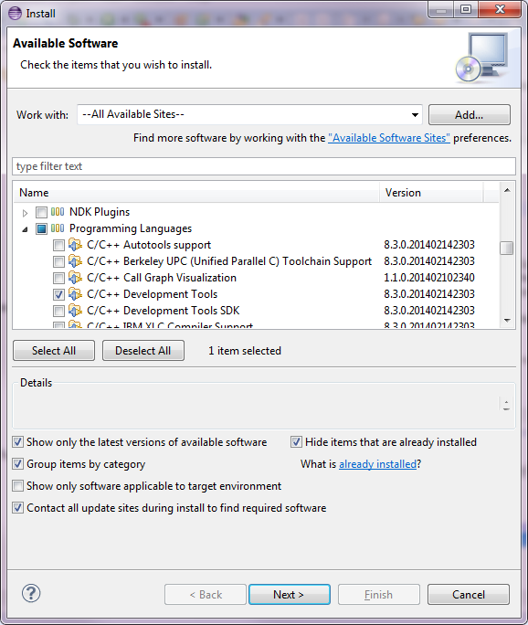

The files you need to download in order to work with or on Provenance depend on your role and operating system. As a user you simply need a compatible (e.g., the one below) copy of OpenOffice and the Haathi extension. As a developer you need the appropriate developer tools and the source code. Installation tips can be found by clicking on the footnote links.
| Your Role | Operating System | ||||
|---|---|---|---|---|---|
| Shared | Windows | Linux 64 (e.g., Fedora) | Macintosh | ||
| User |
OpenOffice 4.0.1 Haathi extension1S |
OpenOffice 4.0.1 Haathi extension1S |
OpenOffice 4.0.1 Haathi extension1S |
||
| Developer |
Provenance source code Optional GitHub interface for Eclipse such as EGit |
Microsoft Visual C++ 2008 Express Edition2W Java JRE or SDK3S Eclipse Kepler4S Optional SQLite tool such as SQLite Expert SQLite Manager for Firefox Valentina Studio Optional C++ document generator such as Doxygen Optional graphical keystore manager such as Portecle Optional PDF converter such as Ghostscript |
gcc-c++2L toolchain package Java JRE or SDK3S Eclipse Kepler4S with CDT4LM Optional SQLite tool such as - SQLite Manager for Firefox Valentina Studio Optional C++ document generator such as Doxygen Optional graphical keystore manager such as - Optional PDF converter such as Ghostscript |
Command Line Tools for Xcode2M Java JRE or SDK3S Eclipse Kepler4S with CDT4LM Optional SQLite tool such as - SQLite Manager for Firefox Valentina Studio Optional C++ document generator such as Doxygen Optional graphical keystore manager such as - Optional PDF converter such as Ghostscript |
|
The Provenance source code downloads above were constructed with the help of the files below. These are links to primary sources which can change at any time in ways that will break the system.
| Your Role | Operating System | |||
|---|---|---|---|---|
| Shared | Windows | Linux 64 (e.g., Fedora) | Macintosh | |
| User | OpenOffice 4.0.1 | OpenOffice 4.0.1 | OpenOffice 4.0.1 | |
| Developer |
cJSON Crypto++ Library (5.6.2) CyaSSL (2.8.0) Catch (v1.1 build 3) JSON in Java PasswordHash.java log4j (1.2.9) sqlite4java (2.8.2) AWS SDK for Java (1.6.12) Bouncy Castle JCE with provider (1.50) source Bouncy Castle OpenSSL (1.50) jar commons codec (1.9) |
OpenOffice SDK (4.0.1) Boost (1.55.0) leptonica (1.68) tesseract (3.02.02) |
OpenOffice SDK (4.0.1) Boost (1.55.0) leptonica-devel package giflib-devel package libjpeg-devel package libpng-devel package libtiff-devel package zlib-devel package tesseract-devel package |
OpenOffice SDK (4.0.1) Boost (1.55.0) |
To install the Haathi extension after you have downloaded it, first start up the already installed OpenOffice. Next, click on the Tools menu and select Extension Manager...
Press the Add... button in the Extension Manager, navigate to the downloaded haathi.oxt, and Open it.
You will be asked to Accept a license agreement.
The extension will appear in the list, but is not available for use in OpenOffice until it is restarted. Close the Extension Manager, exit OpenOffice, and restart it.
Upon restart you should have access to Haathi through a new Provenance menu.
Windows and dialogs related to Provenance are indicated by the "Provenance" text in the title bar. OpenOffice is still able to edit its regular (local, not Provenance-enabled) documents, so check the window title to be sure your save command, for instance, is being applied to a Provenance document if that is the intention. The Provenance edit window is pictured below.
The audit window looks very similar.
What you will first download is vcsetup.exe, the Visual C++ setup program. Run the program to download and install the remainder of Visual C++ 2008 Express Edition.
On Fedora 20 this can be achieved with the command sudo yum install gcc-c++.
The specifics will depend on your Linux distribution. Use the helloWorld project later to verify
that you have installed gcc-c++ and Eclipse successfully.
You will need an Apple ID and password for the download. Click on the download link above and log in. Check near the top of the list of downloads or search for the "Command Line Tools (OS X ...) for Xcode" that is appropriate for your version of the operating system and click on it. A description will appear beside a link to a *.dmg file for download. Download the file and double click to mount and open it. Click on the package icon to start the installation procedure. Use the helloWorld project later to verify that you have installed the Command Line Tools and Eclipse successfully. Note that gdb is not included with recent versions of the Command Lines Tools, so debugging with Eclipse will not be possible.
The JRE will suffice, but the SDK includes keytool, which may be useful but is not required. Follow the standard installation procedure for your platform.
Follow the standard Eclipse installation procedure for your platform. The standard version should suffice. Both JUnit and Ant are used for Java development, but they should be included.
It might be better not to download this component directly, but to install it from within Eclipse. Find in the Help menu the item Install New Software... and click. Complete the Install dialog in approximately the way pictured below and click Next > or Finish until complete.
